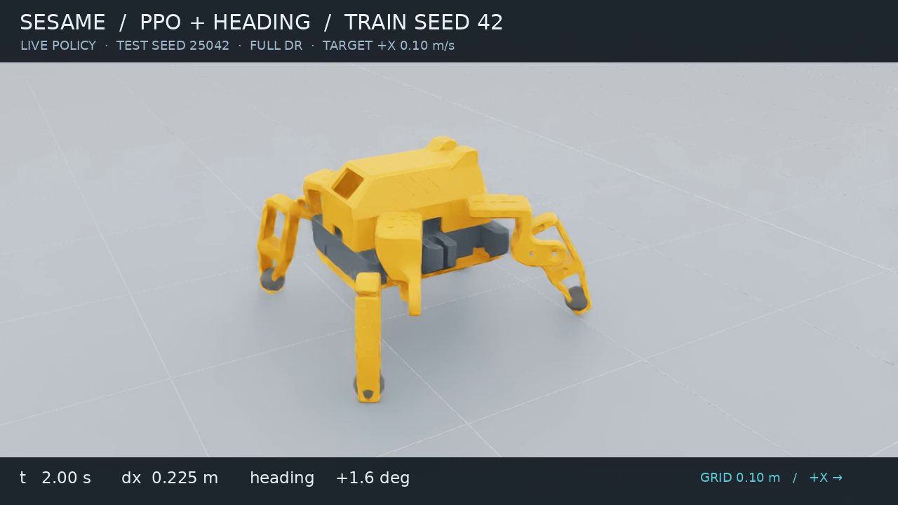
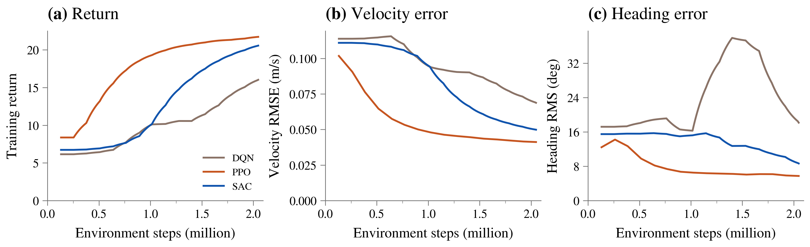
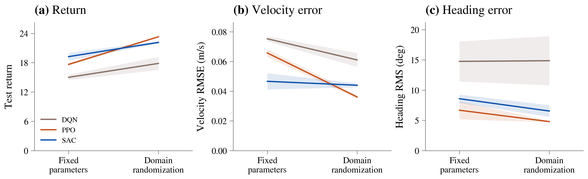
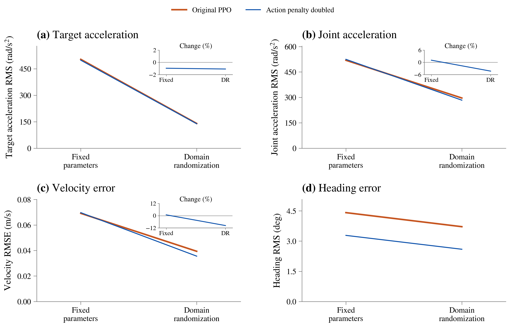
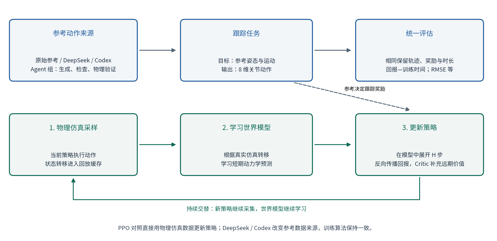
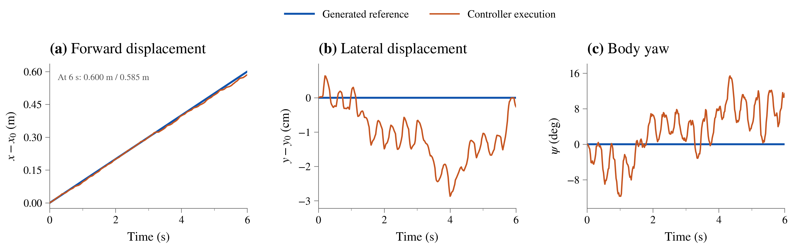
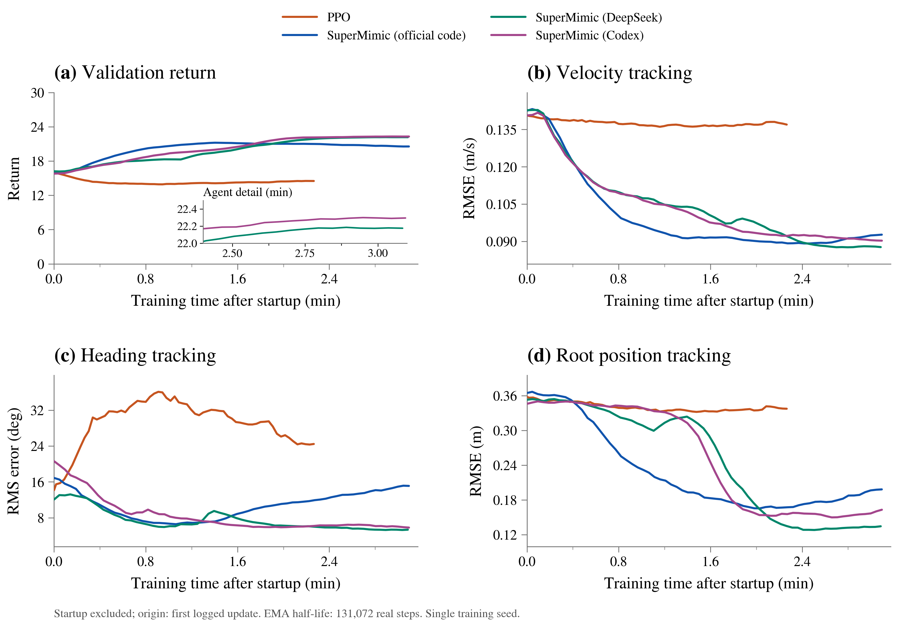
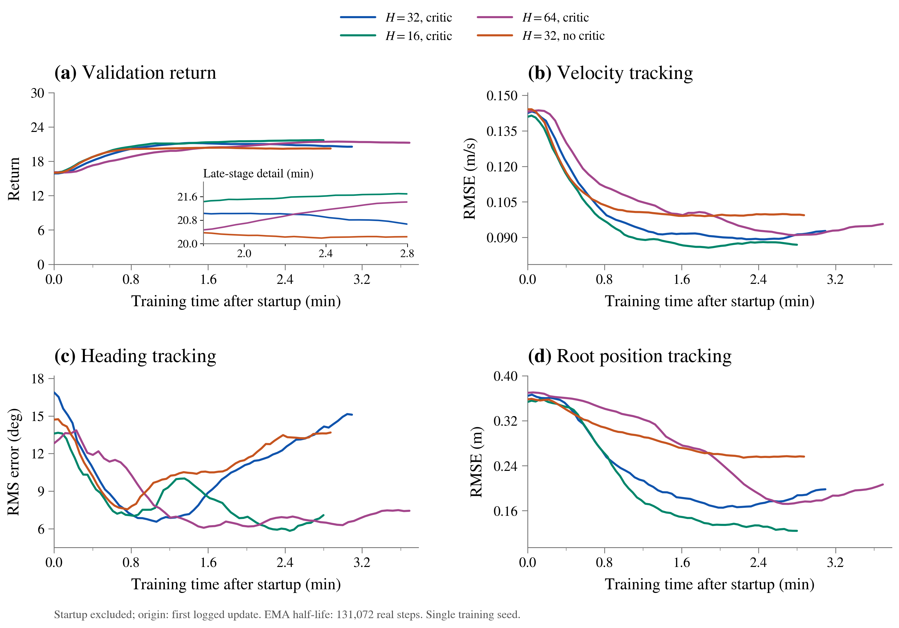
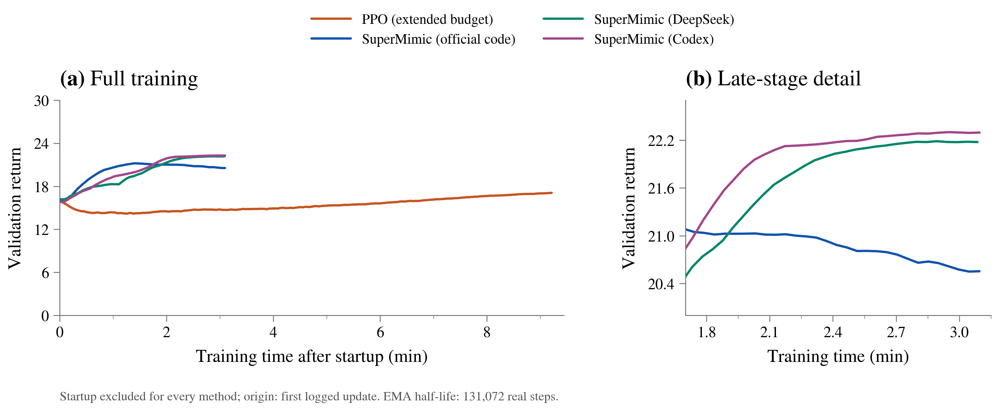

上海交通大学强化学习课程作业 · 2026年11月
摘要：本文研究 Sesame 小型四足机器人的速度跟踪、动作平滑性与训练效率。在 Isaac 平地行走任务中，对比 DQN、PPO 和 SAC，并通过动作差惩罚对照分析控制平滑性；在 MuJoCo 参考轨迹跟踪任务中，对比 PPO、基于官方代码适配的 SuperMimic，以及采用 DeepSeek 和 Codex 生成参考轨迹的 SuperMimic。域随机化评估下，PPO 取得最高基线回报 23.30，前向速度 RMSE 为 0.0361 m/s。动作差惩罚加倍降低了控制信号变化率，实际关节加速度在域随机化条件下降低 4.28%，在固定参数条件下增加 1.06%。参考跟踪任务中，相同真实交互预算下官方代码 SuperMimic 的测试回报较 PPO 高 5.617，包含启动开销的训练时间为 PPO 的 3.41 倍；在相近的 8.32 分钟训练窗口内，其验证回报较延长预算 PPO 高 3.887。Agent 参考进一步提高了共同测试集回报和实际前进速度，但速度仍低于参考目标。
DQN、PPO 和 SAC 基线各采用 3 个训练种子，其余对照采用训练种子 42。各项比较使用对应任务内统一的奖励与测试协议，结论适用于本文的仿真配置和训练预算。
研究对象为 Sesame 小型四足机器人，包含 8 个主动关节和浮动机身，总质量为 0.384 kg。URDF、11 个视觉网格及惯性参数来自公开的 sesame-ml 模型。实验在仿真环境中开展，并以模型的标称参数作为域随机化基准。
机器人模型通过 Isaac URDF 转换器导入仿真环境，并完成网格、关节、惯性参数及 CUDA 仿真一致性校核。导入模型包含 8 个转动关节和 9 个具有质量的刚体，总质量与源模型一致。

图 1：Sesame 在 Isaac 平地环境中执行 PPO 行走策略。图像截取自策略仿真轨迹第 2 秒。
| 设置 | 实验配置 |
|---|---|
| GPU | NVIDIA RTX 4090 D，24 GB 显存 |
| 基线仿真环境 | Isaac Sim 4.5、Isaac Lab 2.3、PyTorch 2.7、CUDA 12.8 |
| 地形与指令 | 水平地面，沿世界 +X 方向以 0.10 m/s 前进 |
| 控制频率 | 50 Hz；物理步长 2 ms，每 10 个物理步更新动作 |
| 观测与动作 | 36 维观测，8 维关节位置偏移动作 |
| 并行规模 | 256 个环境，每回合最多 10 秒 |
| 随机化 | 质量、接触摩擦、PD 参数、电机能力、控制时延/滞后和初始状态 |
速度指令行走实验采用 Isaac 环境，参考轨迹跟踪实验采用 mjlab / MuJoCo GPU 环境。两类任务具有不同的奖励、观测与目标定义，回报仅在各自任务的统一设置内比较。
DQN、PPO 和 SAC 使用相同的行走奖励、域随机化范围与终止规则。每种算法采用训练种子 42、43、44，每个种子的交互预算为 204.8 万步。PPO 和 SAC 输出 8 维连续动作；DQN 采用分支网络与 Double DQN 更新，将每个关节离散为 5 档，输出 40 个 Q 值。算法对照采用统一任务和交互预算，各算法使用对应的动作表示、网络结构、观测归一化和优化配置。
Isaac 行走实验设置固定参数评估（Nominal）和域随机化评估（Domain randomization）两种条件，表中分别记为“固定参数”和“域随机化”。所有策略均在下述域随机化范围内训练，每个模型使用同一组冻结权重进行两种评估。该实验考察训练后策略在不同测试分布下的运动表现，训练阶段始终启用域随机化。
固定参数评估：质量、惯量、PD 增益和电机力矩/速度上限固定为模型及仿真配置的标称值，接触摩擦系数为 0.9，额外动作通信延迟与一阶滞后关闭。初始偏航角和平面速度为 0；初始关节角叠加均匀分布的 ±0.015 rad 扰动。
域随机化评估：每个并行环境在回合重置时独立采样参数，并在回合内固定。全身质量和惯量使用同一个 0.8–1.2 倍缩放系数；PD 比例增益与微分增益分别缩放至标称值的 0.8–1.2 倍；电机力矩与速度上限缩放至 0.8–1.0 倍。机器人摩擦系数从 0.3–1.5 的 64 档中采样，地面摩擦固定为 0.9。采用平均摩擦组合规则后，有效接触摩擦范围为 0.6–1.2。
动作通信延迟取 0、20 或 40 ms，一阶动作滞后的时间常数为 20–60 ms。初始关节角扰动范围为 ±0.035 rad，偏航角范围为 ±5°，X、Y 方向初速度分别在 ±0.02 m/s 内采样。连续变量服从均匀分布。两种评估均关闭额外观测噪声并采用平地；同一对照内的目标速度、奖励和终止规则一致。图中 Fixed parameters 与 Domain randomization 对应上述两种条件。
该评估协议适用于第 2、4 节的 Isaac 实验。两种测试条件的差异涵盖动力学参数、执行器响应和初态分布；对应结果反映同一策略对上述测试分布的响应。训练阶段域随机化的开关消融不在本实验范围内。MuJoCo 参考跟踪任务采用第 5 节的独立配置。
学习曲线以累计真实环境步数为横轴，比较相同交互预算下的学习表现。指数移动平均（EMA）在完整训练记录上计算，图中展示首次记录到有效参数更新之后的观测区间。

图 2：三种基线的学习曲线。横轴为累计真实环境步数，纵轴依次为训练回报、前向速度 RMSE 与航向 RMS。每种方法的实线表示三个训练种子在共同环境步数处的 EMA 均值。EMA 半衰期为 131,072 步，在完整记录上计算后截取正式训练区间。PPO 误差指标包含 16 个诊断时刻；回报窗口为 PPO 最近 100 回合和 SAC/DQN 最近 256 回合。最终测试指标直接由原始轨迹统计。
各算法的最终模型分别在固定参数与域随机化条件下测试。每个模型在每种条件下评估 128 个完整首回合，每种算法每种条件合计 384 回合，总计 2304 回合。同一评估条件下，各算法使用配对的初态与物理参数。结果报告三个训练种子的均值 ± 样本标准差。
| 条件 | 方法 | 测试回报 | 前向速度 RMSE（m/s） | 航向 RMS（°） |
|---|---|---|---|---|
| 固定参数 | DQN | 15.00 ± 0.55 | 0.0753 ± 0.0017 | 14.76 ± 3.31 |
| 固定参数 | PPO | 17.65 ± 0.32 | 0.0657 ± 0.0026 | 6.68 ± 1.50 |
| 固定参数 | SAC | 19.24 ± 0.77 | 0.0466 ± 0.0054 | 8.58 ± 0.70 |
| 域随机化 | DQN | 17.85 ± 1.33 | 0.0610 ± 0.0046 | 14.87 ± 4.06 |
| 域随机化 | PPO | 23.30 ± 0.13 | 0.0361 ± 0.0013 | 4.80 ± 0.09 |
| 域随机化 | SAC | 22.15 ± 0.26 | 0.0440 ± 0.0014 | 6.55 ± 0.97 |

图 3：三种基线在固定参数和域随机化条件下的测试结果，评估设置见第 2.1 节。所有模型均采用域随机化训练。实线连接两种测试条件下的均值，阴影表示三个训练种子的样本标准差；每种方法在每种条件下共评估 384 回合。横轴为离散评估条件，结果采用未经平滑的测试统计。
固定参数评估下，SAC 的前向速度 RMSE 最低，为 0.0466 m/s。域随机化评估下，PPO 的回报最高，为 23.30，速度 RMSE 和航向 RMS 分别为 0.0361 m/s 和 4.80°，均低于其余方法。DQN 的速度和航向误差高于两种连续动作方法。三种方法在全部测试回合中均未发生跌倒，本实验样本内的跌倒率相同。
评价指标定义为：回报 Σr_t；前向速度误差 √mean((v_x−0.10)²)；航向误差 √mean(wrap(ψ−ψ_cmd)²)。速度采用世界坐标系，航向误差以度表示。机身高度低于 0.023 m 或倾斜超过 60°时判定为跌倒；越界与非有限状态单独统计。
行走奖励由目标跟踪、姿态稳定、动作平滑和力矩正则项组成。奖励设计参考 宇树 Go2 官方奖励配置中的速度跟踪、姿态、关节运动、功率与接触行为等要素，并依据 Sesame 的质量、关节数量和动作尺度设定权重。
DQN、PPO 和 SAC 共用以下行走奖励。v 表示世界系线速度，ω 表示机身系角速度，u 为截断到 [0,1] 的直立程度，a 为归一化动作；mean 表示对 8 个关节取平均。
| 类别 | 奖励率 | 作用 |
|---|---|---|
| 速度跟踪 | 1.5 exp(−((vx−0.1)²+vy²)/0.01)u² |
接近目标速度并限制横向运动；倾倒时削弱奖励 |
| 前向运动 | clip(vx/0.1,−1,1)u² |
提供持续前向运动激励 |
| 航向保持 | −0.5(1−cos(ψ−ψ_cmd)) |
约束机身朝向与世界 +X 轴一致； ψ_cmd=0 |
| 直立 | +0.35u |
鼓励保持机身直立 |
| 横向速度 | −0.10(vy/0.10)² |
减少侧向漂移 |
| 偏航角速度 | −0.03ωz² |
约束瞬时偏航角速度 |
| 横滚/俯仰角速度 | −0.01(ωx²+ωy²) |
减少机身快速摇摆 |
| 垂直速度 | −0.02(vz/0.10)² |
减少上下跳动 |
| 力矩 | −0.02 mean((τ/0.18)²) |
对关节力矩实施平方正则化 |
| 相邻动作差 | −0.08 mean((a_t−a_(t−1))²) |
约束相邻控制信号变化 |
| 站姿偏离 | −0.10 mean((q−q_stand)²) |
抑制过大姿态偏离，保留正常步态空间 |
单步奖励为 r_t = 0.02 × 奖励率总和 − 2 × I(真正终止)。跌倒、越界或无效状态触发一次终止惩罚，正常超时不计该项。奖励项的作用由系数、变量尺度、聚合方式和时间积分共同决定。例如，垂直速度项等价于 −2vz²，再乘以 0.02 s 控制步长。
基线奖励采用绝对航向约束，并结合速度、姿态、动作差和力矩项评价行走行为。奖励未设置关节速度/加速度、机械功率、腾空时间、接触时间方差、滑脚、异常接触和软限位项。第 5 节采用独立的参考跟踪奖励，足端跟踪和关节限位惩罚权重均为零。
为评估动作差惩罚对控制平滑性的影响，分别训练系数为 0.08 与 0.16 的 PPO 策略。两组目标速度均为 0.10 m/s，初始网络参数、环境状态与域参数一致，训练种子为 42，交互预算为 204.8 万步。动作信号变化与实际关节加速度分别作为控制层和运动层的平滑性指标。
测试采用第 2.1 节的两种评估条件，两组统一使用动作差系数 0.08 计算测试回报，同时记录各自训练奖励下的回报。每个模型在每种条件下使用测试种子 35042、36042，共评估 128 回合。两组均采用单个训练种子。

图 4：动作差惩罚加倍与原设置 PPO 的平滑性对照。(a) 执行目标角加速度 RMS；(b) 实际关节加速度 RMS；(c) 前向速度 RMSE；(d) 航向 RMS。固定参数与域随机化评估设置见第 2.1 节。实线连接两种评估条件下的原始测试均值，每组采用单个训练种子，每种条件评估 128 回合。横轴为离散评估条件，平滑性与跟踪误差联合分析。小图表示动作差惩罚加倍相对原设置的变化百分比，计算方式为两者之差除以原设置的测量值，再乘以 100%；灰色水平线表示零变化。
| 条件 | 方法 | 共同奖励回报 | 目标加速度 RMS（rad/s²） | 实际关节加速度 RMS（rad/s²） | 前进速度（m/s） | 速度 RMSE（m/s） | 航向 RMS（°） | 跌倒数 / 回合数 |
|---|---|---|---|---|---|---|---|---|
| 固定参数 | 基线 | 17.606 | 503.25 | 519.11 | 0.1249 | 0.0692 | 4.41 | 0/128 |
| 域随机化 | 基线 | 22.770 | 140.08 | 296.30 | 0.1232 | 0.0394 | 3.72 | 0/128 |
| 固定参数 | 动作差惩罚加倍 | 17.863 | 498.43 | 524.62 | 0.1387 | 0.0697 | 3.28 | 0/128 |
| 域随机化 | 动作差惩罚加倍 | 23.162 | 138.56 | 283.62 | 0.1146 | 0.0356 | 2.60 | 0/128 |
动作差惩罚系数加倍后，固定参数与域随机化条件下的归一化动作变化率分别下降 3.85% 和 6.08%。实际关节加速度在域随机化条件下下降 4.28%，在固定参数条件下增加 1.06%。域随机化条件下，有效前进速度由 0.1232 降至 0.1146 m/s，更接近 0.10 m/s 指令，速度与航向误差同步减小；固定参数条件下，速度升至 0.1387 m/s，超速幅度增加。上述结果表明，动作差正则化降低了控制信号变化，其对实际关节加速度的影响随评估条件改变。实际关节加速度和机械功率正则化构成进一步研究方向。
归一化动作变化率定义为相邻动作差的 RMS 除以 0.02 s，单位为归一化动作每秒。实际关节加速度采用 50 Hz 关节速度差分 Δq̇ / 0.02 秒计算，单位为 rad/s²；执行目标角加速度采用相同控制周期差分。统计排除回合重置跳变，首步差分采用已知重置速度。该统计量为控制频率下的加速度 RMS，与 500 Hz 物理子步的加速度峰值分别定义。平滑性与前进速度、航向误差和跌倒数联合评价，以区分稳定行走和低运动幅度所产生的低加速度。
PPO 通过物理仿真采集状态转移，并利用这些样本更新策略。SuperMimic 交替执行仿真采样、世界模型学习和策略优化：世界模型预测状态变化，策略通过短期想象轨迹的时间反向传播优化回报，Critic 估计想象窗口之后的价值。世界模型在单次策略更新期间保持冻结，在模型学习阶段继续更新。可微世界模型复用不同参考动作共享的状态转移规律，为策略优化提供物理仿真之外的训练信号。SuperMimic 项目说明
SuperMimic 论文分别考察 PPO-Sim、PPO-WM 和直接优化想象回报的 SuperMimic。PPO-Sim 在物理仿真中采样，PPO-WM 在学习得到的世界模型中采样，两者均采用 PPO 更新；SuperMimic 则对想象回报直接求梯度。原论文超过 1000 倍的 GPU 小时差距来自与 SONIC 的比较，PPO-WM 对照衡量达到目标训练回报所需的想象步数。本文采用物理仿真中的 PPO 作为基线，并独立测量 Sesame 任务中的训练时间与策略表现。SuperMimic 论文，第 4.1–4.2 节
PPO 对照与 SuperMimic 使用相同的 Actor/Critic 结构，采样过程完全在物理仿真中进行，对应 PPO-Sim。各组采用固定超参数，PPO-WM 不作为本文的实验对照。

图 5：参考生成与世界模型策略学习流程。参考轨迹定义跟踪目标；策略在物理仿真中采集状态转移以训练世界模型，并通过想象轨迹优化跟踪回报。
| 方法 | 策略训练方法 | 训练参考来源 | 对照目的 |
|---|---|---|---|
| PPO | 物理仿真中的 PPO | 原始参考 | 无世界模型的基线 |
| SuperMimic（官方代码） | 官方 SuperMimic 的 Sesame 适配 | 与 PPO 相同的原始参考 | 更换策略训练方法的影响 |
| SuperMimic（DeepSeek） | 同一 SuperMimic 实现 | deepseek-flash 生成程序，经检查和仿真验证后的参考 |
DeepSeek 数据生成流程与训练组合的效果 |
| SuperMimic（Codex） | 同一 SuperMimic 实现 | Codex 生成程序，经检查和仿真验证后的参考 | Codex 数据生成流程与训练组合的效果 |
原始参考由 Isaac 教师策略采集；DeepSeek 与 Codex 参考由 mjlab / MuJoCo 中的控制器执行获得。两种 Agent 均结合解析反馈控制、物理检查和机器人先验生成轨迹程序；Codex 程序采用迭代调试得到的控制结构，DeepSeek 提示包含可执行范例。参考来源同时改变动作分布及其与训练仿真动力学的一致性。因此，Agent 对照评价参考生成与策略训练的整体效果，语言模型能力不是单独控制的实验变量。
Agent 生成的参考轨迹作为策略的跟踪目标，推理阶段由训练后的策略输出 8 维动作。世界模型的训练数据来自策略在线采集的状态转移；32 条参考轨迹决定目标动作集合，世界模型的转移样本量由仿真交互预算决定。
参考生成采用 MimicAgent 的“动作规划 → 程序生成 → 执行检查 → 诊断修订”流程。原方法通过运动学检查筛选粗参考，再由强化学习获得动力学可行的执行。本文进一步对候选轨迹进行标称参数与域随机化条件下的物理仿真检验，并将通过检验的实际执行轨迹纳入参考集。MimicAgent 用于参考生成，SuperMimic 用于策略训练。MimicAgent 论文，第 III 节
以一条 Codex 生成轨迹为例，图 6 对比运动学参考与反馈控制器在标称参数下的物理仿真执行。两者具有相同初始位姿，参考沿世界 +X 方向以 0.10 m/s 前进。6 秒内参考与执行的前向位移分别为 0.6000 m 和 0.5845 m，执行平均前进速度为 0.0974 m/s；最大绝对横向位移为 2.87 cm，航向 RMS 为 6.42°。该片段展示参考采集阶段的跟踪情况，训练后策略的运动表现由第 5.5 节统一测试评价。

图 6：Codex 生成的参考轨迹与反馈控制加 PD 控制器的仿真执行对比。(a) 前向位移；(b) 横向位移；(c) 机身偏航角。横轴为仿真时间，蓝线表示运动学参考，橙线表示控制器执行；位移以初始位置为原点，方向沿世界坐标轴。连续实线连接 50 Hz 原始记录，包含初始状态和 300 个控制步后的状态，未作平滑。该片段为参考采集中的单条标称参数检验示例，入库数据采用通过检验的实际执行轨迹。
四组采用相同的机器人、地形、跟踪奖励、0.5 ms 物理步长、50 Hz 控制频率、512 个并行环境、Actor/Critic 结构、域随机化配置及 2,097,152 个真实环境步预算。每组使用 24 条训练参考，每条持续 6 秒，参考来源为实验变量。原始参考截取前 6 秒；Codex 生成的 41 条合格记录按固定顺序选取前 32 条，再固定打乱并划分为 24/4/4 条训练、验证和测试轨迹；DeepSeek 的 32 条参考采用相同划分。共同验证集与测试集各包含原始、DeepSeek 和 Codex 三个来源的 4 条轨迹，共 12 条，各来源等权。测试轨迹与训练数据及生成提示隔离。
学习曲线纵轴为验证轨迹回报 Return = Σr_t，横轴为首次参数更新后的累计训练时间。各组在首次更新后立即评估，并以该评估时刻定义时间零点；后续评估位于每 32,768 个真实环境步的全局边界及训练预算终点。主实验每组包含 65 个训练后评估点，延长预算 PPO 包含 257 个点。时间横轴扣除首次更新前的启动阶段及验证、测试和保存耗时，保留评估之间的采样与参数更新时间。曲线采用在完整评估序列上计算的因果 EMA，平滑半衰期为 131072 个真实交互步。每次验证从参考轨迹第一帧开始，执行完整 6 秒；最终测试使用预算结束时的策略。6 秒正奖励上限为 30，归一化回报定义为 Return/30。
计算成本采用三种统计口径：训练时间包括仿真采样、模型与策略更新及首次编译；曲线时间在此基础上扣除首次更新之前的启动阶段；端到端运行时间进一步包括初始化、验证、测试和保存。参考数据准备成本单独统计。各组在同一 GPU 上串行执行。
本节误差均相对参考轨迹计算：平面速度 RMSE 为 √mean_t((vx−vx_ref)²+(vy−vy_ref)²)；偏航 RMS 为 √mean_t(wrap(ψ−ψ_ref)²)，单位为度；机身位置 RMSE 为 √mean_t((x−x_ref)²+(y−y_ref)²+(z−z_ref)²)。先计算每条测试轨迹的 RMSE，再对全部轨迹取平均。第 2 节采用固定前向速度指令 vx−0.10 和世界 +X 航向，本节采用时变参考轨迹，两类误差分别在各自任务内比较。
RMSE 使用提前终止前的有效状态计算，并与提前终止数共同报告。本节全部实验采用训练种子 42、固定超参数和指定训练预算，结果反映该配置下的策略差异；单个训练种子的回合统计不用于估计跨种子方差。
跟踪奖励由机身位姿、非足端连杆运动与动作平滑项组成。各跟踪项采用 w × exp(−误差平方/尺度²)，连杆项在所选非足端连杆上取平均。单步奖励为总奖励率乘以 0.02 秒控制周期。本节四个主对照组与消融组共享该奖励；第 2 节的速度指令行走任务使用独立的奖励定义。
| 奖励项 | 权重 w | 尺度 | 作用 |
|---|---|---|---|
| 机身位置跟踪 | 0.5 | 0.3 m | 跟踪参考的整体位移 |
| 机身姿态跟踪 | 0.5 | 0.4 rad | 保持参考方向与姿态 |
| 非足端连杆位置 | 1.0 | 0.3 m | 学习身体与腿部协调 |
| 非足端连杆姿态 | 1.0 | 0.4 rad | 限制错误的肢体构型 |
| 非足端连杆线速度 | 1.0 | 1.0 m/s | 跟踪运动速度 |
| 非足端连杆角速度 | 1.0 | 3.14 rad/s | 跟踪转动速度 |
| 相邻动作差平方和 | −0.1 | — | 减少动作跳变 |
Actor 输入包括 30 维本体观测的 10 帧历史和 220 维参考目标，共 520 维，输出 8 维动作。默认想象长度 H=32；世界模型结构为 512×3，Actor 为 512/256/128，Critic 为 256/128。策略想象批量为 2048；世界模型批量为 512，每次更新使用 10 批数据和 8 步预测训练，replay ratio=16。所有组均采用 gamma=0.99，包括无 Critic 组。奖励不包含足端跟踪项和关节限位惩罚，物理仿真与想象轨迹采用一致的奖励定义。
PPO 每个环境采样 32 步，每次更新包含 5 个 epochs 和 4 个 minibatches，学习率为 0.001，clip=0.2，gamma=0.99，GAE λ=0.95，熵系数为 0.005，目标 KL=0.01。初始动作标准差固定为 0.1，所有超参数在对照实验中保持固定。

图 7：共同验证集上的回报与跟踪误差。各组从首次更新后的实测评估开始，每 32,768 个真实环境步评估一次；横轴排除启动及评估耗时。实线为半衰期 131072 步的因果 EMA，各组使用训练种子 42。蓝、橙、绿、紫分别区分官方代码 SuperMimic、PPO、DeepSeek 与 Codex；回报面板的小图放大两组 Agent 在 2.4–3.1 分钟的结果。误差面板按观测范围设置纵轴。
| 方法 | 测试 Return | 速度 RMSE（m/s） | 偏航 RMS（°） | 机身 RMSE（cm） |
|---|---|---|---|---|
| PPO | 14.681 | 0.1395 | 20.20 | 35.74 |
| SuperMimic（官方代码） | 20.299 | 0.0959 | 15.88 | 21.67 |
| SuperMimic（DeepSeek） | 22.071 | 0.0936 | 5.13 | 18.20 |
| SuperMimic（Codex） | 22.353 | 0.0898 | 5.20 | 18.17 |
相同真实环境步预算下，SuperMimic（Codex）取得最高测试回报 22.353。采用相同原始参考的官方代码 SuperMimic 比 PPO 高 5.617，其包含启动开销的训练时间为 PPO 的 3.41 倍。固定交互预算下，世界模型方法以更高计算开销获得了更高回报。第 5.8 节进一步比较相近训练时间内的策略质量。两个 Agent 组同时改变训练参考分布，其表现反映数据来源与策略学习的共同作用。
各方法分别在与其训练参考来源相同的 4 条保留测试轨迹上评估。测试轨迹未参与训练，每项结果为对应 4 条轨迹的平均累计回报。
| 方法 | 测试参考来源 | 测试 Return |
|---|---|---|
| PPO | 原始参考 | 15.384 |
| SuperMimic（官方代码） | 原始参考 | 23.496 |
| SuperMimic（DeepSeek） | DeepSeek | 24.173 |
| SuperMimic（Codex） | Codex | 24.372 |
各行使用对应来源的测试参考，测试目标随参考来源变化。
实际运动表现
采用四组在 2,097,152 步预算结束时的策略，从配对的相同初始状态独立执行全部 12 条测试轨迹。运动测量与训练结束测试分批执行。完整片段的实际前进速度定义为世界 X 净位移除以 5.98 秒，提前终止片段使用有效时长；参考速度采用相同时间段。绝对横向位移为各片段最终世界 Y 位移绝对值的平均值。运动方向偏差为净位移方向相对世界 +X 的绝对夹角，与机身偏航角分别统计。
| 方法 | 实际前进速度（m/s） | 参考速度（m/s） | 绝对横向位移（cm） | 运动方向偏差（°） | 完整执行 |
|---|---|---|---|---|---|
| PPO | 0.0064 | 0.1048 | 7.02 | 70.61 | 12/12 |
| SuperMimic（官方代码） | 0.0412 | 0.1048 | 8.22 | 26.49 | 12/12 |
| SuperMimic（DeepSeek） | 0.0563 | 0.1048 | 4.40 | 13.75 | 12/12 |
| SuperMimic（Codex） | 0.0507 | 0.1048 | 3.69 | 14.97 | 12/12 |
三组 SuperMimic 的实际前进速度为 0.041–0.056 m/s，均低于 0.105 m/s 的统一参考速度。两种 Agent 组相对官方代码组具有更高的前进速度、更小的横向位移和运动方向偏差，但仍存在前向速度跟踪不足。
完整执行数表示未触发任务提前终止条件的轨迹数量，不等同于满足速度与方向要求的成功率。接近静止时，净位移方向对微小漂移敏感，因此与实际速度共同解释；净位移小于 1 μm 时，方向不定义。

图 8：想象长度与 Critic 的消融实验。各组使用原始参考、相同真实环境步预算、奖励和评估集，比较 H=16、32、64 及 H=32 无 Critic 配置。横轴为扣除启动及评估耗时的训练时间；实线为半衰期 131072 步的因果 EMA，评估间隔为 32,768 个真实环境步，训练种子为 42。回报面板的小图放大 1.8–2.8 分钟的结果，误差面板按观测范围设置纵轴。
| 方法 | 测试 Return | 速度 RMSE（m/s） | 偏航 RMS（°） | 机身 RMSE（cm） |
|---|---|---|---|---|
| H=32，有 Critic | 20.299 | 0.0959 | 15.88 | 21.67 |
| H=16，有 Critic | 21.509 | 0.0855 | 8.04 | 13.34 |
| H=64，有 Critic | 20.888 | 0.0996 | 7.35 | 25.23 |
| H=32，无 Critic | 20.083 | 0.1012 | 13.87 | 28.20 |
H=16、有 Critic 配置取得最高测试回报 21.509，同时具有最低的速度和机身位置 RMSE。H=64 的偏航 RMS 最低。H=32 移除 Critic 后回报下降 0.215，速度与机身位置误差增加，偏航误差减小。不同想象长度改变想象步数和计算量；在所测参考、训练种子及真实步预算下，H=16 相较 H=32 和 H=64 同时取得更高回报和更低训练开销。
| 方法 | 训练（分钟） | 端到端运行（分钟） | 真实步数 | 想象步数 | 提前终止 | 采样显存峰值（GiB） |
|---|---|---|---|---|---|---|
| PPO | 2.44 | 11.79 | 2097152 | 0 | 0/12 | 1.01 |
| SuperMimic（官方代码） | 8.32 | 18.17 | 2097152 | 53608448 | 0/12 | 3.20 |
| SuperMimic（DeepSeek） | 8.27 | 18.06 | 2097152 | 53608448 | 0/12 | 3.20 |
| SuperMimic（Codex） | 8.25 | 18.08 | 2097152 | 53608448 | 0/12 | 3.20 |
| H=16，有 Critic | 7.98 | 17.89 | 2097152 | 26804224 | 0/12 | 2.15 |
| H=64，有 Critic | 8.84 | 18.60 | 2097152 | 107216896 | 0/12 | 5.30 |
| H=32，无 Critic | 8.03 | 17.83 | 2097152 | 53608448 | 0/12 | 2.99 |
训练时间采用同步后的采样与更新计时，并包含启动阶段；端到端时间包括初始化、评估和保存。评估耗时计入端到端时间，学习曲线仅统计训练计算。提前终止按任务终止条件统计，包含跌倒之外的终止原因。显存峰值为进程离散监测样本中的最大值。
官方代码 SuperMimic 的启动阶段持续 313.8 秒，占含启动训练时间的 62.8%；首次有效更新之后的训练耗时为 185.7 秒。启动阶段包含首次编译、数据积累和参数更新，在该短预算任务中构成主要计算开销。7 次训练启动前 GPU 检查均未发现其他 CUDA 计算进程；该检查反映启动时刻的资源占用。
参考数据准备成本包括轨迹生成、修订、仿真执行和验收，与策略训练成本分别统计。
| 数据准备阶段 | 阶段性质 | 合格参考 | 生成/修订次数 | API 次数 |
|---|---|---|---|---|
| DeepSeek 试采集 | 先导采集 | 3 | 3 | 6 |
| DeepSeek 探索采集（中止） | 中止探索 | 4 | 12 | 26 |
| DeepSeek 正式采集 | 参考采集 | 32 | 33 | 66 |
| Codex 参考采集 | 参考采集 | 32 | 45 | 0 |
| Codex 验收规则复核 | 既有轨迹检验 | 41 | 45 | 0 |
DeepSeek 正式采集耗时 10.11 分钟，包含先导采集与中止探索的总耗时为 13.72 分钟。中止探索发生于生成提示调整之前。耗时依据阶段累计计时或起止时间统计；缺少完整时间记录的阶段不纳入耗时估计。Codex 验收规则复核检验已采集轨迹，未执行新增轨迹采集。
上述计时不包含教师策略训练与控制器调试。Codex 采集程序未调用外部 API，表中 0 次仅对应采集程序的调用统计；程序生成阶段的模型交互与调试耗时未纳入计时。
为比较相近训练时间内的策略质量，将 PPO 的真实环境步预算设为 8,388,608。除步数预算外，训练种子 42、参考数据、网络、超参数及评估间隔均与原预算 PPO 一致。

图 9：延长预算 PPO 与三组 SuperMimic 的验证回报。横轴为首次更新后的训练时间，排除启动及评估耗时；实线为半衰期 131072 步的因果 EMA，各组曲线终止于各自预算。评估间隔为 32,768 个真实环境步，训练种子为 42。表中时间对照采用包含启动开销的训练计时。左图展示完整训练过程，右图放大 1.7–3.15 分钟、回报 20.0–22.7 的区域，以区分三组 SuperMimic 的回报。
以三组 SuperMimic 的最大累计训练时间 8.32 分钟为共同窗口上限，选取各组在该窗口内最后一次实测验证结果。各组保留实际评估时刻，时间对照同时报告已使用的真实环境步数。
| 方法 | 实际评估时间（分钟） | 已用真实步数 | 验证 Return |
|---|---|---|---|
| PPO（延长预算） | 8.31 | 7405568 | 16.690 |
| SuperMimic（官方代码） | 8.32 | 2097152 | 20.578 |
| SuperMimic（DeepSeek） | 8.27 | 2097152 | 22.158 |
| SuperMimic（Codex） | 8.25 | 2097152 | 22.319 |
在相同原始参考下，官方代码 SuperMimic 的验证回报比延长预算 PPO 高 3.887，两次评估时刻相差 0.8 秒，对应真实环境步数分别为 2,097,152 和 7,405,568。该配置下，SuperMimic 在相近累计训练时间内以更少的物理仿真交互获得更高回报。
按图中的首次更新后训练时间统计，在 0–3.10 分钟窗口内，官方代码 SuperMimic 与延长预算 PPO 的最后一次实测验证回报分别为 20.578 和 14.744，差值为 +5.833，两次评估时刻相差 1.1 秒。包含启动开销与排除启动开销的两种计时口径均显示，世界模型策略在对应时间窗口内取得更高回报。
延长预算 PPO 的完整训练时间为 9.39 分钟，端到端运行时间为 44.05 分钟，最终测试回报为 17.080。本节采用固定超参数和单个训练种子，密集评估用于刻画学习过程，方法差异的跨种子稳定性不在该实验的估计范围内。
在 Sesame 平地行走任务中，PPO 在域随机化评估下取得最高回报及最低速度、航向误差，SAC 在固定参数评估下取得最低速度误差。动作差正则化降低了控制信号变化，但实际关节加速度的改善随测试条件变化，表明控制信号平滑性与实际运动平滑性需要分别评价。
参考跟踪任务中，SuperMimic 在相近累计训练时间内，以更少的真实环境交互取得更高回报。Agent 参考提升了共同测试集表现，实际速度仍低于目标。H=16 取得最高消融回报。后续研究聚焦实际关节加速度正则化、参考轨迹的动力学一致性及跨种子稳定性。项目代码仓库：https://github.com/Wang-Even/Sesame。